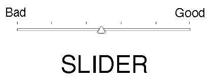
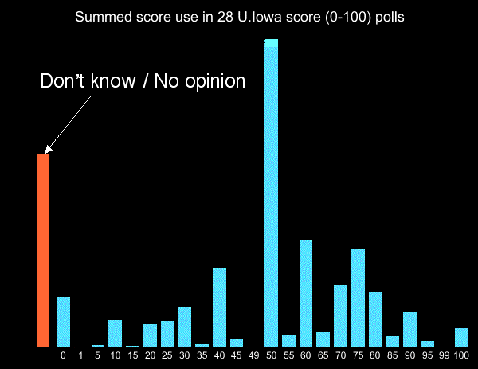

By Warren D. Smith, June 2013.
(Skip to conclusions.)
We attempt to summarize about 100 years and 100 papers
worth of experimental research on humans trying to use "rating scales,"
focusing on what we can learn about
how "score voting" (also called "range voting") should be conducted.
An older page, which knew comparatively little about this
kind of research and recommended 0-99 score range (and had some good reasons), was
Why99.html;
that and the present page now will need to be reconciled.
The present page seems to conclude 0-9 is the best scale.
Introduction/History
Of the psychological-sociological measurement methods that depend on human
judgments, rating scale procedures exceed them all for popularity and use.
– Opening paragraph of Lily & Yoram Neumann:
Comparison of six lengths of rating scales: student attitudes toward instruction,
Psychological Reports 48,2 (1981) 399-404.
J.P.Guilford: Psychometric methods, McGraw (2nd ed) 1954, discusses verbal and
numerical scales in chapter 11.
Incidentally both numerical and verbal scales could also be done as
"graphical" scales where the voter marks a line segment, or
where the graphical scale is merely used as an aid to comprehension.
This area began with psychologists trying to determine how and how not to design
psychological and sensory tests. Later, much more research (and research money)
came with the advent of "market research." E.g. companies wanted to determine which potential
products would be more or less attractive to consumers, and they wanted to
design surveys that would work well for answering such questions.
Plus, surveys themselves are expensive. Big money was at stake.
And so it happened that by 2013,
at least 100 scientific papers had been published on this topic
(and perhaps far more! – this is only the number I personally examined
while preparing this page, albeit of those 100, I carefully read only about 10).
Most of this research was oriented toward rating consumer products of all types, not
politicians/voting,
although some actually did concern politicians.
Our purpose here is to learn from all that published psychological
research what rating scales should work best for score voting purposes –
and, in the other direction, to suggest additional research questions.
We'll also present a little new research of our own.
Other surveys (not oriented toward "score voting," but useful generally)
Hershey H. Friedman & Taiwo Amoo:
Rating the rating scales,
J. of Marketing Management 9,3 (Winter 1999) 114-123.
Jon A. Krosnick & Stanley Presser:
Question and Questionnaire Design,
chapter 9 of Handbook of Survey Research,
Emerald Group Publishing (2nd ed.) 2010.
John P. Robinson, Phillip R. Shaver, Lawrence S. Wrightsman:
Measures of political attitudes,
Academic Press 1999. (801 pages.)
Example – The "9-point hedonic scale"
was developed for the US Army in the 1940s and 1950s.
It became standard in the food industry, and
by the year 1995 had become the most widely used sensory scale in the world.
Overall, how much do you like or dislike this soup?
Like extremely
Like very much
Like moderately
Like slightly
Neither like nor dislike
Dislike slightly
Dislike moderately
Dislike very much
Dislike extremely
This is both a verbal and 1-9 numerical scale. (The numerical value of
"dislike extremely" equals 1, and "like extremely"=9, but the tasters are only
told the words; the numbers are used only by those processing taster questionnaires.)
When used, the scale is either equispaced vertically as shown at left,
or equispaced horizontally as at right (and always oriented in the directions shown).
Although nobody claims this scale is optimal, a lot of research went into developing it.
N-level scales were tried for N∈{5, 6, 7, 8, 9, 11}.
At least 51 words and phrases were investigated as level-descriptors.
Both "balanced" (i.e. symmetrical) and "unbalanced" (ultimately not used) scales were investigated.
The final choice of an equispaced 9-level balanced scale with graphical aid
was chosen based on measured time required for
tasters to complete questionnaires, reliability/reproducibility of ratings obtained,
transmitted useful discrimination information, and
the fact that 9 levels fit better on standard size paper –
9 and 11 levels worked best
judged by the other criteria, but 11 caused typesetting problems. To quote Peryam 1989 (p.23):
Why does the hedonic scale have nine categories, rather than more or less? Economy perhaps?
Preliminary investigation had shown that discrimination between foods and reliability
tended to increase up to eleven categories, but we encountered, in addition to the dearth
of appropriate adverbs, a mechanical problem due to equipment limitations.
Official government paper was only 8 inches wide and we found that typing eleven
categories horizontally was not possible. So we sacrificed a theoretical
modicum of precision...
In addition to at least 5 papers written by the developers of this scale, e.g.
L.V.Jones, D.R.Peryam, L.L.Thurstone: Development of a scale for measuring soldier's
food preferences, Food Research 20 (1955) 512-520.
D.R.Peryam & N.F.Girardot:
Advanced taste-test method, Food Engineering 24 (1952) 58-61.
D.R.Peryam & F.J.Pilgrim:
Hedonic scale method of measuring food preferences, Food Technology (Sep.1957) 9-14.
David R.Peryam: Reflections, pp.21-30 in 1989 book Sensory evaluation
(ASTM International, Conshohocken PA).
at least one entire symposium was held about it, and scientific
papers continue to be written about it up to the present day. For example
Laura Nicolas, Coline Marquilly, Michael O'Mahony:
The 9-point hedonic scale: Are words and numbers compatible?,
Food Quality and Preference 21,8 (Dec. 2010) 1008-1015
found that just using the underlying digits 9,8,7,6,5,4,3,2,1 as descriptors
yields statistically different results than the official phrases.
A discrepancy was also found using {+4,+3,+2,+1,0,-1,-2,-3,-4}.
That leads to the question of which is better – numbers or words?
At least on one non-food application (financial risk assessment by auditors)
it was found that numbers were (by certain statistical quality measures) superior:
D.N.Stone & W.N.Dilla:
When numbers are bettter than words – the
joint effects of response representation and experience of inherent risk judgments,
Auditing, a journal of practice and theory 13 (1994) 1-19 supplement S.
Directionality
Some researchers have detected small (of the order of 5%) directional-bias effects, e.g:
Jason Chan:
Response order effects in Likert-type scales,
Educational and Psychological Measurement 51 (1991) 531-540.
Hershey H. Friedman, Paul J. Herskovitz, Simcha Pollack:
The biasing effects
of scale-checking styles on response to a Likert scale,
Proc. of the American Statistical Association Annual Conference: Survey Research Methods (1994)
792-795.
Michaela Wänke, Norbert Schwarz, Elisabeth Noelle-Neumann:
Asking Comparative Questions: The Impact of the Direction of Comparison,
Public Opinion Quarterly 59,3 (1995) 347-372.
Michaela Wänke:
Comparative Judgments as a Function of the Direction of Comparison Versus Word Order,
Public Opinion Quarterly 60,3 (1996) 400-409.
These effects are not always present. Anyhow, the lesson of this for
voting purposes is:
all scales must be oriented in a single mandated direction.
Leah Melani Christian,
Nicholas L. Parsons,
Don A. Dillman:
Designing Scalar Questions for Web Surveys,
Sociological Methods & Research 37,3 (Feb. 2009) 393-425
found that orienting scales positive end first
increased response times.
The lesson of that is: the orientation used in the (horizontal version of) the
9-point hedonic scale – most-liked at right – was the correct choice.
How many scale-levels?
About 70 studies of this topic prior to 1980 were reviewed by
Eli P. Cox III: The optimal number of response alternatives for a scale – a review,
J. Marketing Research 17,4 (1980) 407-422.
Unfortunately, Cox found there is no universal "magic number" X for which we can say
"X levels is the best choice." Instead, the best number seems to depend on the application
and probably also on the statistical yardstick used to judge "best."
For example, for judging food, as we saw from the Peryam quote above, 11 may be the best number.
There have also been examples, e.g. patient-reported-outcomes in health care,
in which 5 levels appears best –
J.Khadka & 4 others:
The importance
of rating scales in measuring patient-reported outcomes,
Health & Quality of Life Outcomes 10 (July 2012) 80-;
and here an an example where 7 was superior to 5 levels:
Kraig Finstad:
Response Interpolation and Scale Sensitivity: Evidence Against 5-Point Scales,
J. Usability Studies 5,3 (May 2010) 104-110.
The psychometricians have tried many such yardsticks, although never exactly the one we want
(Bayesian Regret) for election purposes (nor is it common to
actually statistically measure "information content" using, e.g. entropy –
psychometricians unfortunately have historically been comparatively incompetent at statistics...
but we shall presume here that whatever analyses they were doing were good enough for this
comparatively trivial purpose).
Also, an extremely important question for us as election reformers is "which scale do
voters prefer?" measuring how enactible different scale-based voting systems
would be if put to a referendum – but the psychometricians cared very little about that.
(We'll discuss that next section.)
Despite the absence of a single magic X, Cox was willing to provide some conclusions:
Scales with two or three levels are "generally inadequate."
The marginal improvement from using more than nine levels is small.
The optimal number usually is 5, 6, 7, 8, or 9.
An odd number of levels is preferable (vs even) in situations where
respondent can legitimately adopt a neutral position.
But some pollsters have preferred even numbers of levels in an effort to force the
respondent to provide a non-neutral opinion, however slight.
"Spatial" helps respondents, which Cox was vague about but I guess indicates
graphical aid.
Later papers modified Cox's conclusions slightly:
Gilbert A. Churchill Jr. & J. Paul Peter:
Research Design Effects on the Reliability of Rating Scales: A Meta Analysis,
J. Marketing Research 21,4 (1984) 360-375.
compiled evidence that "the more scale points used, the more 'reliable' the
scale." Similar conclusions are supported by
Duane F. Alwin:
Feeling thermometers versus 7-point scales – Which are better?
Sociological Methods and Research 25,3 (1997) 318-340.
Mathematically speaking, certainly scales become better the more
levels they have (forever) in the sense that "roundoff error" is diminished.
However, those benefits increase more slowly the more levels we have, and
might be counteracted by other effects and disadvantages in the real world of human rather
than mathematically idealized respondents.
Hershey H. & Esther M. Friedman: A Comparison of Six Overall Evaluation Rating Scales,
Journal of International Marketing and Marketing Research 22,3 (1997) 129-138
found that in some situations an 11-point scale produces more valid results than
a 3-, 5-, or 7-point scale. (See also the Peryam quote above.)
Their conclusion was that researchers should
consider using anywhere from 5- to 11-point scales, not 5 to 9 as Cox had
recommended.
10-level scale seems, overall, the best / most popular
considered several statistical yardsticks for measuring the performance of rating scales,
including the comparatively unstudied (but very important for us) question of
what the respondents wanted. They had 149 respondents fill out questionnaires
rating recently visited stores and restaurants on graphically-aided
scales with 2-to-11 levels (anchored with the words very poor
on the left end and very good on the right) as well a 101-level scale where
the respondent was simply asked to write a number from 0 (very poor) to 100 (very good),
which was a different, not graphically aided, format.
They also were given another questionnaire 2 weeks later to assess test/retest reliability.
Brandon Wiley and W.D.Smith hereby decipher/summarize
Preston & Colman's findings as follows,
where A>B means "we have statistically significant evidence (≥95% confidence)
that A-level scale is superior to B-level scale in that respect"
while
A⊃B means the superiority is not statistically significant.
(For example,
for "validity" and "internal consistency" no
statistically significant differences were found at all.)
The asterisked (*) yardsticks "Easy,"
"Quick," and "Expressiveness" were self-judged by respondents.
Preston & Colman also considered correlations between ratings got from two different scales
for all possible scale-pairs. All scales correlated highly and significantly with each other,
but the best results arose for pairs of scales with ≥6 levels each.
If all 8 yardsticks in the above table are regarded as equally important, then
the "winner" would seem to be either 9 or 10 scale levels
in the sense that both 9 and 10 (uniquely)
are preferred by a majority of yardsticks versus each
other rival (where "preferred" means either ⊃ or >).
For example "10 levels" is preferred versus "5 levels" by 6 out of the 8
yardsticks, and versus "{4,3,2} levels" by 7 out of 8.
If (to break ties)
we regard the three self-judged (asterisked) categories
as slightly more important (accomplished by weighting them 1.1 rather than 1)
then 10 levels becomes the unique-best
in the sense that 10 levels then is preferred by a (thus-weighted)
majority of yardsticks versus any rival number
(where "preferred" means either ⊃ or >).
If we regard the statistically significant > preferences
as more important than the ⊃ ones, then the pre-eminence of 10 levels
only becomes stronger. However, if we regard the asterisked yardsticks as tremendously
more important than the others, then 5 levels would win, and other winners
would arise if other subsets of the yardsticks were awarded extreme importance.
Thus in voting terminology, 10 is the "Condorcet winner" where the statistical yardsticks serve
as the (weighted) "voters" while the scale-cardinalities are the "candidates"
– also 10 is the Borda winner –
while with unweighted voters {9, 10} is the "Smith set" and 9 is the Borda winner.
(And with either unweighted or these-weighted voters, 9 is the IRV winner.)
Indeed, with our weighted voters there is a unique "Condorcet ordering" of the scale-sizes:
10 > 9 > 11 > 101 > 7 > 8 > 6 > 5 > 4 > 3 > 2
Preston & Colman did not actually give their results in the numberless
"⊃" format above, instead tabulating
actual numbers measuring each scale-size's performance on each statistical yardstick.
If you examine
those numbers, then you'll probably agree that 10 levels is
the winner.
Preston & Colman's own conclusions were:
"From the multiple indices of reliability, validity, discriminating power, and
respondent preferences used in this study, a remarkably consistent set of conclusions emerges...
Scales with 2, 3, or 4 response categories yielded scores that were clearly and
unambiguously the least reliable, valid, and discriminating.
The most reliable scores were those from scales with 7-10 response categories,
the most valid and discriminating were from those with ≥6 categories,
or – in the case of intertertile discriminating power – those with ≥9.
Respondent preferences were that scales with 2, 3, or 4 categories once
again generally performed worst and those with 10, 9, or 7 best.
Taken together, [these] suggest that rating scales with 7, 9, or 10
response categories are generally to be preferred."
and (in their abstract)
"Respondent preferences were highest for the 10-point scale."
Two related studies (each of more people) which approximately confirm Preston & Colman:
E. Isaac Sparling & Shilad Sen:
Rating: How Difficult is It?,
Proceedings of the fifth ACM conference on Recommender systems (RecSys 2011) 149-156
D. Cosley, S.K. Lam, I. Albert, J.A. Konstan, J. Riedl:
Is seeing believing?: how recommender system interfaces affect users' opinions.
SIGCHI Proceedings (2003) 585-592, ACM New York, NY.
Sparling & Sen
compared 4 rating systems for online use in rating (a) movies and (b) product reviews:
"Unary": raters check a box to express approval.
"Thumbs up or down": raters indicate either approval or disapproval by clicking
one of two symbols.
Of those, the clear winner for both purposes
in terms of user expressed preferences, and also having fairly fast
response times, was five star.
Cosley et al compared three different systems:
"binary": raters indicate either approval or disapproval by clicking
one of two symbols (same as "thumbs up/down")
{-3, -2, -1, +1, +2, +3} which has 6 levels since zero is intentionally omitted
{1, 2, 3, 4, 5, 6, 7, 8, 9, 10} regarded as an 0.5 to 5 "star" scale using 0.5-star increments.
Among those, users clearly most-preferred
1-10.
An actual exit-poll score-voting
study of real voters in France 2012 concluded
voters preferred either of
the 3-level scales {0,1,2} or {-1,0,+1} over both
approval voting (2-level scale {0,1})
and a 21-level scale {0,1,2,3,..., 19,20}.
The authors speculated {-2,-1,0,+1,+2} would
be preferred even more, but did not directly study that.
All of these studies are compatible with
the conclusion 10-level scales are the most-wanted
by voters themselves.
Which numerical rating scales have pro pollsters used for rating politicians?
A different kind of "popularity" measure is this.
I searched the ORS's international historical poll database
of over 600,000 poll-questions. The following numerical score-ranges were used in questions
seeking ratings of politicians:
Score range
1-4
1-7
0-100
1-5
1-100
1-10
0-10
ABCDF
ABCDEF
{-5 to -1}∪{+1 to +5}
Popularity
445
880
285
2700
64
1062
829
586
3
184
but, apparently, no others. [Here "popularity" is a very crude estimate based on
"hit count" in a separate too-simplistic automated search among both political and
non-political polls.]
Initially I had found no polls using negative numbers as ratings,
but that unfortunately was
an artifact caused by the ORS's database search tool being confused by negative numbers,
as I realized after encountering these poll questions in the database
KING, MARTIN LUTHER, JR.
Question: I'd like you to rate Dr. Martin Luther King on a scale. If you have a favorable opinion of him, name a number between +1 and +5 -- where a +5 is the highest position indicating you have a very favorable opinion of him. If you have an unfavorable opinion, name a number between -1 and -5 where -5 is the lowest position -- indicating you have a very unfavorable opinion of him. How far up or down the scale would you rate Martin Luther King Jr.?
Source: USAToday/ Gallup
Date: 26 Aug. 2011
Universe: Country: United States
Method: telephone
Sample Size: 1319
BUSH, GEORGE W., Opinion of
Question: Rate George W. Bush on a scale. If you have a favorable opinion of him, name a number between plus one and plus five - where a plus five is the highest position indicating you have a very favorable opinion of him. If you have an unfavorable opinion, name a number between minus one and minus five where minus five is the lowest position - indicating you have a very unfavorable opinion of him.
Source: CNN/ USA Today/ Gallup Poll
Date: 25 Oct. 2004
Universe: Country: United States
Method: telephone
Sample Size: 1538
which the searches I had initially been using, would not find.
I did not investigate
(≤3)-level numerical scales, but ultimately
tried hopefully every reasonable possibility 0-to-X and 1-to-X with 4 or more
levels, also tried "negative X to Y" and "minus X to Y" and "between X and Y"
trying both numerals and spelled-out numbers ("five") with or without "plus" and "minus."
There also were
many nonnumerical verbal scales like
"very positive, somewhat positive, neutral, somewhat negative, very negative"
or "favorable, unfavorable" most of which were "both-signed," so in that
sense negative numbers happened. (Also other numerical scales besides those tabulated above
were used for rating things besides "overall quality of politicians.")
phrasepopularity among pollsters
unfavorable 21988
fair 19906
poor 11354
disapprove 8745
excellent 8273
negative 4317
neutral 3859
very favorable 3637
somewhat unfavorable 2460
very poor 2193
acceptable 2054
somewhat negative 2017
very good 1943
strongly favorable 1527
slightly 1075
dislike 972
very bad 639
extremely good 14
superb 0
The key lessons seem to be that pro pollsters
most prefer
5- and 10-level scales for politician-rating purposes (if using a numerical scale),
prefer numerical over letter-grade,
prefer to avoid negative numbers,
with 2-to-4 levels they prefer verbal over numerical scales,
but with ≥7 levels they prefer numerical over verbal scales,
with 5 or 6 levels, verbal or numerical seem about equally popular,
if using a verbal scale, prefer "balanced" over "unbalanced."
What about continuum-infinite "graphical slider" scales?
Max Freyd: The graphic rating scale,
Journal of Educational Psychology 14,2 (Feb, 1923) 83-102.
pointed out advantages of a continuum infinite rating scale where the respondent
makes a mark on a line segment to indicate her rating.
("Concrete, simple, universal, easy to administer and score.")
The only disadvantage Freyd could see was it is more annoying for the pollster
to process graphical polls (have to measure lengths).
For voting purposes, though, that could be devastating (can you imagine a lawsuit
about the precision of length measurements?).
Despite Freyd's arguments, over the next 90 years his idea did not gain wide use.
With the advent of computer graphics and the internet, "graphical sliders"
became usable, avoiding the only criticisms (albeit for voting purposes, we could still
imagine nasty possible lawsuits and might need to try to avoid them by precise legal
specifications about every pixel of the "graphical slider"... a nightmare... and
even then: what about blind voters? Or those with reduced visual acuity? And
what if somebody accuses a machine of slightly biasing things by moving 1 pixel left?).
At least two studies were made trying to assess the usefulness of this new tool.
The surprising conclusion from those studies is that sliders do not work as
well as "radio buttons":

The studies were:
Mick P. Couper, Roger Tourangeau, Frederick G. Conrad, Eleanor Singer:
Evaluating the Effectiveness of Visual Analog Scales: A Web Experiment,
Social Science Computer Review 24,2 (2006) 227-245
Colleen Cook, Fred Heath, Russel L. Thompson and Bruce Thompson:
Score Reliability in Web- or Internet-Based Surveys:
Unnumbered Graphic Rating Scales versus Likert-Type Scales,
Educational and Psychological Measurement 61,4 (2001) 697-706
Randall K. Thomas:
A Comparison of Visual Analog and Graphic Rating Scales in
Web-based Surveys, FedCASIS 2011 workshop, Washington DC.
The first study found significant effects (>99.9% confidence)
of the input type on the overall completion rate (of internet surveys):
completion rates of 91.8% for the slider,
95.8% for the radio buttons, and 95.6% for the
numeric input versions.
Also (which is probably related), all three studies found radio buttons continually
produced the fastest answer-time clockings, with sliders the slowest.
In Thomas's study the slider/radio-button time-ratio was 1.46;
in the study by Cook et al, it was only 1.11.
However, neither of the first two studies were
able to detect significant differences in answer quality
got by the various input methods.
The third study (which was far larger!) by Thomas, while unable to see a difference in
"validity," did succeed in seeing this:
the lowest standard deviations in ratings were obtained with a graphic
end-anchored scale (no intermediate anchors), namely the graphic scale gave
σ=0.19
per respondent,
which was superior to end-anchored radio buttons with
σ=0.22
(both normalized to a real number scale ranging between 0 and 1 – I thank Thomas for
clarifying this point).
This difference appears to be statistically significant, albeit too
small to be detected by polls with only 1000 respondents.
From Thomas's standard-deviation study we learn the important lesson that
it is best to use end-anchored scales and not intermediate anchors.
That is, using a line of radio buttons, or a line segment for slider input,
only label the outer two buttons, or line-segment ends,
with descriptive words.
Do not label interior points with descriptions.
(Even merely placing an unlabeled "grid" along the line segment seems incommodious.)
DO THIS: bad |---------------| good bad o o o o o o o o good
DO NOT DO THESE:
o o o o o o o
|----+----+----| very bad good very bad |---+---+---+---| good
very bad good very bad good
bad good
If you do, then Thomas's study shows you will
Slow response times,
Increase standard deviations in responses,
Complicate the ballot,
all of which are undesirable.
Incidentally, it also is possible to consider scales with no anchors,
also called "self-anchoring" scales, in which the voter herself mentally imagines
whatever two end-anchoring words she likes.
Frederik Van Acker & Peter Theuns:
Assessing the Applicability of Self-Anchoring Scales in Web Surveys,
Proceedings Survey Research Methods Section, American Statistical Association (2007)
studied them and concluded they were a bad idea.
In the light of the first two studies alone, there seems little or no reason to
use graphic scales – if there is no measurable quality improvement, why
employ the slower (and in the first study less-completed) slider method?
(Plus, we remind the reader of an earlier mention of
Sparling & Sen's study finding users preferred a 5-level discrete scale over a slider.)
But the third study did find a small, but detectable, quality improvement,
partly just due to it being a larger study, and partly (perhaps) due to the fact it tried
(among other things) end-anchored-only scales, which as we said are best.
Even if so, though, for voting purposes the possible
slight statistical advantages not seem worth the possible legal quagmires.
Nonnegative versus both-signed scales
Norbert Schwarz, Barbel Knauper, Hans J. Hippler, Elisabeth Noelle-Neumann, Leslie Clark:
Numeric Values May Change the Meaning of Scale Labels,
Public Opinion Quarterly 55,4 (1991) 570-582.
The responses of German adults to the question
"How successful would you say you have been in life?"
were influenced by the numeric values provided to give meaning to the scale labels.
When the scale ranged from 0 ("not at all successful") to 10 ("extremely successful"),
34% selected values between 0 and 5.
But when the scale went from -5 ("not at all successful") to +5 ("extremely successful"),
only 13% selected values -5 to 0.
Schwarz & Hippler selected
412 Germans randomly from telephone directories
and asked them to
rate 6 politicians along 11-point scales with different numeric values,
ranging from "don't think very highly" (0 or -5) to
"think very highly of this politician"
(10 or +5).
Half did so orally by telephone and the other half (randomly chosen) in
writing by mail.
As predicted by the preceding study, all
politicians received more favorable ratings along the -5 to +5
than along the 0 to 10 scale.
Specifically (renormalizing everything to lie on the 0-10 scale
for comparison purposes) the -5 to 5 scale yielded mean=5.6 while the 0-10
scale yielded
mean rating 5.0.
In all, 29.3% reported a mean approval rating below the midpoint
along the -5/+5 scales,
whereas 40.2% did so along the 0-10 scale.
Moreover, this effect happened with both data
collection methods, demonstrating that the impact of numeric values
does not depend on their
visual presentation. The telephone question wording was:
Please imagine a thermometer that runs from minus five to plus five, with a zero in between
(alternate wording: that runs from zero to ten). Please use
this thermometer to tell us how you feel about
some politicians. Plus five (ten) means that you think very highly of them, and
minus five (0) means that you don't think very highly of them.
How do you feel about (name)?
The same result was replicated by Haddock & Carrick
in surveys rating Prime Minister Tony Blair conducted the day before the 1997 British election.
I have also replicated this result, to some degree:
I collected 5 score-voting-style polls using the score range {1,2,3,...,10}
conducted by Elon University in N.Carolina (sample size≈411 each)
asking for ratings of these politicians:
John McCain 19 sep 2008,
Barack Obama 19 sep 2008,
Sarah Palin 19 sep 2008,
Elizabeth Dole 3 oct 2008,
Joseph Biden 18 sep 2008.
I collected 5 score-voting-style polls using the score range {-5,-4,-3,-2,-1, +1,+2,+3,+4,+5}
(note zero is omitted)
conducted by Gallup in United States (sample size≈1538 each)
asking for ratings of these politicians:
G.W.Bush 25 oct 2004,
John Kerry 25 oct 2004,
Edward Kennedy 16 dec 1991,
George Bush 23 oct 1991,
Dan Quayle 20 aug 1991
Summed score-usage results: (-5 to -1): 191%; (+1 to +5): 287%.
I found a USA-wide score-voting-style poll (6 sep 1987) rating 13 politicians on a
{-5,-4,...+5} scale (here zero is included) done by Gallup for the Los Angeles Times.
(Sample size 1607.)
The results apparently were (with 0-scores discarded; also for both this and
the preceding polls we've discarded "don't know"s)
Politician -5 to -1 +1 to +5
Michael Dukakis 35% 29%
Albert Gore 25 26
Paul Simon 22 17
Joseph Biden 20 28
Jesse Jackson 15 84
Richard Gephardt 13 24
Bruce Babbitt 10 17
George Bush 29 87
Bob Dole 28 61
Jack Kemp 21 37
Pete du Pont 19 16
Alexander Haig 14 67
Pat Robertson 9 55
sum 260 548
(More, albeit still incomplete, details about that data.)
This once again agrees with the theory that using an all-nonnegative scale causes
better scale-use uniformity, while scales including negative numbers cause
under-use of the negative part of the scale. It should be noted that the scale-use-uniformity
is desirable for the most prominent politicians (i.e those likely to win);
nonuniformity is ok for losers since lower accuracy on them will damage election results less.
All of the above studies were for prominent politicians only.
Conclusion:
Both the above studies, plus my own replication from a much larger
amount of published professional pollster data, all suggest
it is better to use a unipolar 0 to 10 than a both-signed -5 to +5 scale
for
score voting, in the sense that
the former should yield more-uniformly distributed scores.
This seems true regardless of whether zero is omitted or included.
The problem is that with -5 to +5,
the lower half of the scale is largely unused and wasted.
On the other hand in an exit-poll
study of French 2012 presidential election voters,
much more uniform usage of the scale was found for
{-1, 0, +1} than with {0, 1, 2},
suggesting that in this case, the both-signed scale is superior.
That is probably due to our next effect...:
An inordinate fondness for zero
He has an inordinate fondness for beetles.
– J.B.S.Haldane (Naturalist) upon being asked what his study of the
animal world could tell us about God.
It is a strange thing, but in every score voting poll
(or using other rating-based voting systems, e.g.
"Majority Judgment") that has
closely simulated real election conditions (that I am aware of as of 2013), the most popular
score has been zero.
Illogically,
this happens whether or not the minimum-allowed score is zero – i.e. it also happens
for both-signed scales such as {-1, 0, +1}.
With the Majority-Judgment verbal scale
recommended by Balinski & Laraki, the minimum score "a Rejeter" plays zero's role.
To discourage this, some pollsters have resorted to the trick of making the allowable scores be
{-5, -4, -3, -2, -1, +1, +2, +3, +4, +5} with zero omitted.
But there may be a way out of this
black hole. The University of Iowa during 1998-2000 conducted a
large number of score-voting polls,
using an 0-100 scale,
in various mid-US states concerning various national and
that-state politicians. Their instructions said (my italics)
Let's talk about your feelings toward some prominent people.
I'll read the name of a person and ask you to rate that person on a
thermometer that runs from 0 to 100 degrees. A rating of 50 degrees is neutral.
Ratings between 51 and 100 degrees mean that you feel warm
toward that person, and ratings between 0 and 49 mean that you feel
cool toward that person. You may use any number from 0 to 100 to tell
me how favorable or unfavorable your feelings are for each person. If
you don't recognize a particular person just tell me and we will go on
to the next name. Pat Buchanan.
In the U.Iowa poll series, the most popular score was 50, not zero.
(This contrasts with my own exit-poll simulated election study
using 0-100 scale, in which 0 was most popular and nothing was mentioned about 50 in the
instructions.)
The U.Iowa polls were mere polls, not conducted under conditions
closely-simulating a real election. Also, they concerned well-known politicians only,
as opposed to the studies of real elections which included lesser-known candidates.
But for what it is worth, this suggests that perhaps
the inordinate-fondness can be shifted from 0 to 50 just by the power of suggestion.
This effect also shows the importance of making the ballot instructions the same
everywhere in the country.
Rating is superior to Ranking
Which is the better way to elicit information about how people feel about
various things – rating them on some fixed numerical "quality scale," or
ranking them into order of increasing quality? As you can tell from the quote
at the top of this page, there is a long-standing
consensus that rating is usually better.
That began to develop with
E.S.Conklin & J.W.Sutherland:
A Comparison of the Scale of Values Method with the Order-of-Merit Method,
J. Experimental Psychology 6,1 (Feb. 1923) 44-57.
Abstract:
In one series of experiments forty jokes were arranged by ten subjects
by the order-of-merit method; in another series the same jokes were arranged by
ten other subjects by the scale-of-values method. The correlation between the
final two orders was 0.55. A closer examination of the statistical data
indicated that the scale-of-values method was a better index...
The most obvious advantage of ratings is that they elicit more information.
A bit less obviously, people rate things faster than they rank them.
Thus
J.Michael Munson & Shelby H. McIntyre:
Developing practical procedures for the measurement of personal values
in cross cultural marketing, J. Marketing Research 16,1 (1979) 48-52
estimated (p.49) that in their experiments, ranking took 3 times longer.
The possible counterarguments
in favor of rankings would be that they are somehow more
"meaningful" and for that or some other reason (perhaps including
the greater time consumption) yield better-quality assessments.
This was especially
suspected for such vague purposes as "rating personal values"
such as "sense of accomplishment" versus "freedom" versus "wisdom"
(and in fact was contended by the above paper).
Well, the following papers by Feather and Moore
compared ratings versus rankings in exactly that
most-favorable-to-rankings scenario – the "Rokeach value survey":
Michael Moore:
Rating versus ranking in Rokeach value survey – Israeli comparison,
Europ. J. Social Psychology 5,3 (1975) 405-408.
N.T.Feather: The measurement of values: effects of different assessment procedures,
Australian J. Psychology 25,3 (1973) 221-231
Moore's conclusion: "The extremely high degree of correspondence found between
ranking and rating in this study, as
well as in Feather 1973, does not leave any
doubt about the preferability of the rating method for group description purposes."
Case closed.
But for anybody still denying this, we also mention the following
additional papers:
M.F.Johnson, J.F.Sallis, M.F.Hovell:
Comparison of rated and ranked health and lifestyle values,
Amer.J.Health Behavior 23,5 (Sep-Oct. 1999) 356-367
("Results from the present study suggest that a rating
format for health and lifestyle value items should be used.")
Markus Klein & Kai Arzheimer:
Ranking and rating procedures for the measurement of values, analyzed
with an example of the Inglehart-index. Empirical results of a
methodological experiment,
Kolner Zeitschrift für Soziologie und Socialpsychologie 51,3 (Sep.1999) 550-564
[see also Einmal mehr: Ranking oder Rating? 52,3 (Sept. 2000) 541-552 & 553-563].
Abstract:
In empirical social research there is a long debate about
the question, whether ranking procedures are indeed more appropriate
for the measurement of value orientations than rating scales. To gain
empirical clarity, we incorporated a methodological experiment into a
two-wave mail panel survey. In the first wave we asked respondents to
rank and rate the four items of the well known Inglehart-Index. In the
second wave we split the sample and while asking the same question, we
changed the order of the items in the questionnaire for half of the
respondents. By means of this experimental design we can demonstrate
that there exists a correlation between the order of the items in the
questionnaire and the rank-order that respondents assign to these
items. This relationship is even stronger for respondents which gave
the same rating to all items in the first panel wave. Thus, ranking
procedures seem to be affected by response sets as well as rating
procedures. In the light of these findings, there remains no basis for
the assumption, that rankings are superior to ratings in
methodological terms.
G.R.Maio, N.J.Roese, C.Seligman, A.Katz:
Rankings, ratings, and the measurement of values: Evidence for the
superior validity of ratings,
Basic and Applied Social Psychology 18,2 (June 1996) 171-181.
("[Our statistical] results indicated that ratings tended to
evidence greater validity than rankings within moderate- and
low-differentiating participants. In addition, the validity of ratings
was greater than rankings overall.")
It seems no longer possible to dispute that ratings are superior, since they are so
even in settings like those above which initially had been
conjectured highly favorable to rankings.
Differences between real elections versus polls
Certain issues loom much larger in real elections than in mere polls.
In polls, the pollster need not worry much about disabled people (e.g. partially or totally
blind or deaf). Nor is he likely to be sued because of some detail of his practices.
But in elections, these are serious concerns.
For example,
different adjectives mean different things
to different people (e.g. different socio-ethnic groups), which could bias elections.
It might be argued that using adjectives at all disadvantages poorer speakers of English
(relatively speaking). Thus there might be a good legal/fairness
argument for using digits,
not words, to describe scores used for voting, even if the words were somewhat
superior overall reckoned by some statistical measure – the digits are more concise
and have an unambiguous and simple meaning
(mathematically defined by the rules of the voting system),
comprehensible to all cultures and all
ethno-lingual groups, maximally easily understood by sensory-disabled people,
and not susceptible to any possible accusation of unfairness.
Slight error and confusion rates, are of little concern to pollsters but of
tremendous concern in elections and in legal battles about elections.
Also, on ballots, conciseness, speed, and simplicity
are desirable. Printing 300 million ballots is
not a trivial expense, and time delays have been used to manipulate elections by
creating long waiting lines at
polling places, e.g. in Ohio 2004.
Finally, let us discuss voter behavior differences in polls versus real elections.
Voters may be more "strategic" in real elections than in polls. I have seen
the following indication of that: it appears
(but only with about 90% confidence based on the data I have seen so far)
that in the USA 1980-2012, people overstated their support of
third-party candidates to pollsters, relative to when they actually voted
(both these polls and official elections using
plain-plurality voting).
In the U.Iowa telephone score-style
polls using 0-100 scale, respondents
stayed entirely away from scores such as "73." They almost entirely
used multiples of 10 or 25, less often employing other multiples of 5,
with the only used non-multiples of 5 being
1, 49, and 99:

In contrast, in my own smaller
score (0-100) election exit poll (in person using
written ballots and much more closely simulating areal election)
use of non-multiples of 5 was (while still rare) much more frequent, including uses
of 1, 2, 3, 4, 21, 64, 72, 73, and 98.
The reason for this discrepancy
probably is: the Iowa respondents on telephone were unable to know
the full set of "candidates" in advance
since they were only told them one at a time, and hence were unable to
consider fine preferences between them. In my election-simulating exit poll,
they had the full "ballot" in front of them and wrote on it.
Either way, this effect suggests that an
0-100 range is overkill because 95% of the voters choose to restrict themselves to the
21-level subset {0,5,10,...95,100}.
It perhaps argues for "fine at the ends" scales such as {0,1,25,50,75,99,100}.
Conclusions
The evidence surveyed here currently
suggests that the "best" scale for human voters
should have 10 levels and consist entirely of nonnegative numbers
ordered increasing from left to right, and equispaced,
with the two endpointsonly
of the scale "anchored" with descriptive words.
Ballot instructions should have exactly the same standard wording mandated everywhere in
the country (and be simply and concisely worded).
Here "best" is reckoned by a variety of statistical yardsticks applied to data from real humans,
plus the preferences of those voters themselves.
And almost certainly the best number of scale-levels lies in {5, 6, 7, 8, 9, 10, 11}
and we know of at least one important election in
which at least 7 scale levels were genuinely needed by the voters to describe the leading
candidate.
This contradicts my initial conjectures that the best scale would be continuum infinite
such as the real-number interval [0,1]. That is mathematically the most elegant
and yields the best results in Bayesian-regret-based computer simulations of
elections.
Failing that, I had suspected that large-cardinality scales, such as "0 to 99" or
"0 to 999," would be best.
Open experimental questions
Is the "inordinate fondness for zero" only present in real elections (or polls
designed to closely simulate "real" voting conditions) and nonexistent in "mere polls",
and how modifiable is it by use of different ballot instructions? What is the optimum wording
for the ballot instructions?
Is an 0-9 scale better or worse than 1-10?
Are score voters
more strategic, e.g. use the extreme ends of the scale more, in real elections
versus in mere polls?